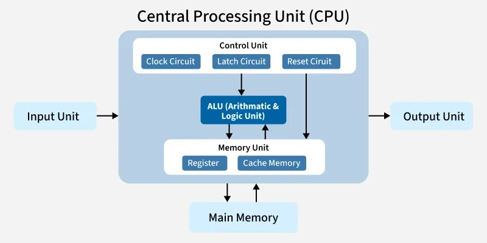
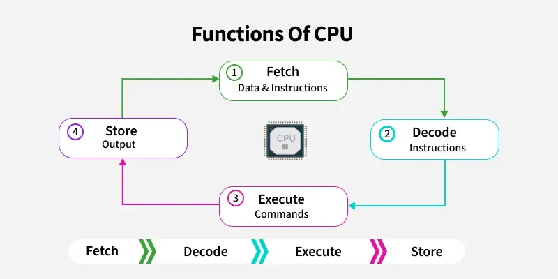

Topic 3: Computer Hardware & CPU
Physical parts of a system that can be seen and touched are known as computer hardware. These components work together to process input and produce output based on user instructions. While software provides the instructions, hardware provides the physical power to execute them.
Internal Hardware Components
The core of every computer lies inside its casing. Here are the most important internal hardware components:
Motherboard
The main circuit board inside a computer. It connects all electronic components together, acting as the central nervous system. Everything from the CPU to the RAM plugs directly into it.
Power Supply Unit (PSU)
Converts power from the electrical outlet into a form that the computer components can use, supplying electricity to the motherboard and other internal hardware.
Graphics Processing Unit (GPU)
A specialized hardware component that renders images, videos, and complex graphics. It is essential for gaming, 3D design, and video editing.
Cooling System
Computers generate a lot of heat. Cooling fans and heat sinks draw hot air away from the CPU and GPU to prevent the system from overheating and shutting down.
Deep Dive: The Central Processing Unit (CPU)
The CPU is famously known as the "brain of the computer." It is responsible for processing instructions, performing mathematical calculations, and managing the operations of all other components. Just as your brain processes information to make decisions, the CPU processes software instructions to make your computer function.

The Three Main Parts of a CPU
- Control Unit (CU): Acts as a traffic cop. It manages the CPU by sending signals (like fetch, hold, and reset) to other parts. It interprets instructions from memory and ensures all components work together in the correct sequence.
- Arithmetic Logic Unit (ALU): The math whiz. It handles all mathematical tasks (addition, subtraction, multiplication, division) and logical decisions (comparing values, AND/OR operations).
- Memory Unit (Registers & Cache): The CPU's personal notepad. It stores data and instructions temporarily so the ALU and CU can access them at lightning speeds without having to wait for the main RAM.

How the CPU Works: The Fetch-Decode-Execute Cycle
The CPU operates in a continuous, endless loop known as the Fetch-Decode-Execute-Store cycle. This cycle happens billions of times every single second!

- Fetch: The CPU retrieves the next instruction from the main memory (RAM).
- Decode: The Control Unit translates the instruction so the computer understands what action needs to be taken.
- Execute: The ALU performs the required math or logic operation.
- Store: The result is saved back into the CPU's memory registers or sent out to the main RAM.
What Makes a CPU Faster?
Modern CPUs are incredibly powerful. Their speed depends on several key factors:
- Clock Speed: Measured in Gigahertz (GHz). A 3.5 GHz processor executes 3.5 billion cycles per second.
- Multiple Cores: A "core" is like a mini-processor inside the CPU. A Quad-Core CPU has four brains working together, allowing it to multitask (like playing a game while downloading a file) much better than a Single-Core CPU.
- Cache Size: A larger cache means the CPU can store more immediate data close by, reducing the time it takes to fetch information from the main RAM.